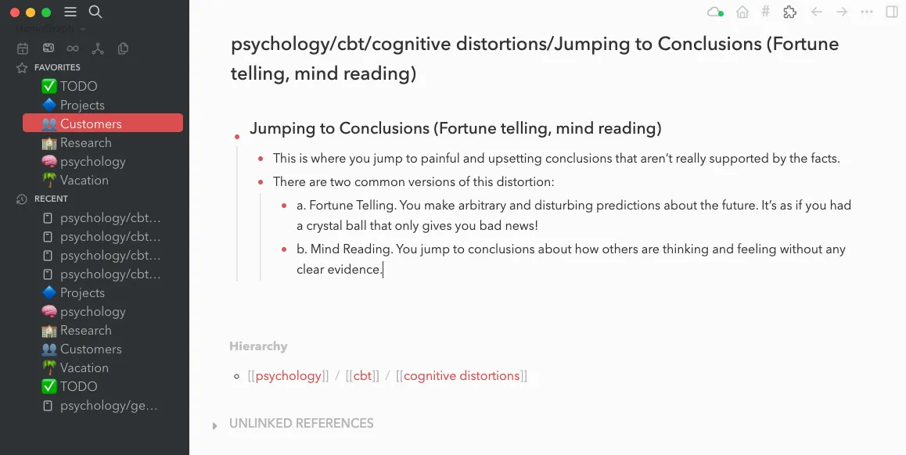

祝大家龙年大吉！
大家可能好奇我写书的时候是用什么工具？正好最近我画架构图的时候使用Excelidraw,也试用了几款其他的工具。而且这两天搭建了一个备忘录的工具，所以正好总结一下。
写书工具
我在写书稿的时候曾经一度想使用Latex，因为它强大的排版功能几乎可以排版任何东西，而且拥有丰富的插件，输出的pdf效果也很好，但是考虑到交稿给编辑，扁编辑在审稿和校对的时候不方便，而且书稿出版社会使用自己的版式重新排版，虽然我一度整了一个Latex模板并尝试写电子书，但是最终也放弃了。
基本上，我写的书稿是使用Markdown的格式。Markdown的格式对于写作还是很方便的，而且不需要考虑太多的版面的问题，方便组织层次，插入图片和代码也都很方便，编译也容易导出到其他格式。
使用vscode 就可以编写Markdown的文本，后来我听说Typora，这是一个很好的Markdown编辑器，支持实时预览，而且支持导出PDF，网上都说使用方便，我也尝试了一下，也确实不错。不过自1.0版本后它开始收费了。
当然收费也无可厚非，毕竟开发者也需要生活，不能够纯用爱发电，对吧？ 但是我还是希望找到一个免费的工具，最终我找到了MarkText，这是一个开源的Markdown编辑器，支持实时预览，而且支持导出PDF，这是我最喜欢的一个Markdown编辑器。
所以我就使用MarkText平替Typora来写书稿，完成了《深入理解Go并发编程》的写作。
这个工具的作者还是中国的同学，非常的赞。不过目前代码活跃度不是那么高了，不过对我来说已经够用了，希望它后续能够支持插件，这样可以充分发挥网友的聪明才智，把功能丰富起来。
笔记工具
首先做笔记的工具很多，比如Notion、Google Keep、Evernote（印象笔记）、OneNote、Simplenote、Bear、GoodNotes、Notability等等，很多，但是很多都是收费的，而且基本是web服务，意味着你的数据都在别人的服务器上，不安全， 而且服务可用性也不可控。
所以我想找的是一个桌面工具，免费的，相应的笔记我通过git保存在github或者自建的git服务器上即可。
有两个工具值得推荐。
第一个是 obsidian, 这是一个免费的笔记工具，支持markdown格式，而且支持插件，可以自己写插件，而且支持本地存储，不需要联网，而且支持git，可以把笔记存储在github上.
它具有以下有点：
- 支持Markdown格式编写笔记,可读性强,也方便导出和跨平台使用。
- 采用文件系统来组织笔记,所有笔记以普通文本文件的形式存储在磁盘上,不依赖任何数据库。
- 建立笔记之间的双向链接,支持网络化思维,可以将笔记关联起来。
- 提供图形化界面,支持大纲预览、回链、未链接提醒等功能。
- 支持嵌入超链接、图片、Latex数学公式等。
- 插件丰富,支持中文分词、思维导图、时间管理等功能。
- 支持多种操作系统如Windows、Mac、Linux等。
- 提供移动版,可以在手机或平板上编辑和查看笔记。
- 支持团队协作,可搭建或加入专用服务器,实现知识共享。
- 个性化主题丰富,美观大方。
第二个是 logseq,logseq是一个开源的网络化个人知识管理和协作工具,具有以下主要特点:

- 支持双向链接,所有块(页面和段落)之间可以相互引用,形成一个网络化的知识库。
- 基于Graph数据结构,支持视图分析、回链和未链接提示等功能。
- 页面和块支持无限嵌套,可以把知识点进行自由组合。
- 支持代码块、TeX数学公式等语法高亮。
- 可以创建Markdown和OrgMode多种格式的页面。
- 支持同时编辑,实时预览编辑内容。
- 支持跨平台编辑。
- 插件系统强大,可以扩展更多功能。
- 界面简洁优雅,支持日夜两种主题模式。
我在Mac上安装Logseq后发现它的功能虽然强大，插件更丰富，但是弹出的对话框不能关闭，后台启动多个进程，占用资源比较大，反应迟钝，这可能是它基于Electron开发的原因，所以我最后卸载了。
其实这两个工具在我的日常生活中都没有使用，我就使用苹果的备忘录，便捷，在多个苹果设备上可以互通。不好的地方在于它过于简单了。
画图工具
其实我之所以考察obsidian和logseq，是因为我最近在画几个技术相关的架构图或者插图。先前较多使用draw.io，这是一个免费的在线画图工具，支持多种图形，而且支持导出多种格式，而且支持保存到本地。不过看看到网上其他同学的架构图图画的都挺好，使用excalidraw画的，有手工画图的风格，非常的漂亮，所以我尝试使用excalidraw画图。
excalidraw默认就配置了三种字体：手写、正常和代码字体。对于我们来说，我们希望对于中文，能够使用一款漂亮的字体做渲染，但是excalidraw官方的网站不支持，有些人通过浏览器插件等方式把其中的字体做替换来达到目的，过于麻烦。
我搜了一下网上的教程，说obsidian很好的支持了excalidraw插件，可以配置自己的字体作为第四种可选择的字体，这就非常好了。
你可以选择一款自己喜欢的字体，放在Obsidian Vault/Excalidraw/font中，我选择了“沐瑶随心手写体”，这是一款免费且好看的中文字体，然后在obsidian的设置中配置excalidraw插件，就可以选择这个字体了。
然后我就可以使用excalidraw画图了，可以看到Font family中多了一个字体选项，这就是我配置的字体。
obsidian也支持了excalidraw的脚本，这极大的丰富了excalidraw的功能，可以画出更加复杂的图形。而且excalidraw插件也支持资源库，我上面图中的gopher就是使用的资源库中的资源。
现在看起来 obsidian + excalidraw插件可以很好的满足我的需求了。
备忘录工具
前面提到，我基本使用苹果的备忘录，但是它的功能太简单了，而且不支持markdown格式，所以我想找一个支持markdown格式的备忘录工具，最好是web方式的，这样我在电脑、平板和手机上都可以自如的编写备忘录了。
经常我脑海中会蹦出一点火花，可能是一个新的项目想法，可能是一个新的技术点，可能是一个新的文章的思路，也可能是一本书的大纲，我书包中常备着一个小本子，当这些想法闪现的时候，我都会拿出本子记录下来。但是经常在一些时候，比如外出的时候，或者半夜有想法失眠的时候，本子不在身边，我生怕这些稍纵即逝的想法就这样消失了。所以如果有一个随时随地的备忘录工具就好了，不仅限于苹果系统。
其实上面笔记工具提到的google keep就挺好，但是有时候访问Google并不是那么方便，而且基于Goole历来的表现，说不定哪一天就把这个产品关闭了。
不过这个工具确实好， 支持代办列表、图片，甚至可以绘图。
当然，类似的备忘录工具有很多，比如这篇知乎文章介绍的。
这两天，我看到了一款非常简洁但是功能有很丰富的备忘录工具，支持自己搭建，我就自己搭建了一个。
这款备忘录工具就是memos, 你可以访问它的示例网站进行试用，示例网站地址是: https://demo.usememos.com/。
usememos/memos是一个开源的轻量级便签服务,可以让用户轻松捕获和分享想法。它的主要特点包括:
- 开源 - usememos在GitHub上以MIT许可证开源,代码公开透明。
- 轻量级 - 简单注册就可以使用,用户可以快速创建和组织便签。
- 多租户 - 支持多用户注册,每个用户都有自己的私有空间。也可以创建公共空间,共享便签。
- Markdown支持 - 支持Markdown格式,可以格式化便签文本。
- 快速搜索 - 可以快速搜索并过滤便签。
- 分享和协作 - 可以分享便签链接到不同平台,也可以与其他人协作编辑。
- 多种主题 - 提供多种主题选择,用户可以自定义外观。
- 数据备份 - 数据可以导出为JSON文件,方便备份。
- 响应式设计 - 可以在移动设备和桌面端流畅使用。
- 简洁易用 - 界面简洁,使用非常容易上手。
最重要的一点，你可以自己通过docker或者直接编译源码来搭建自己的备忘录服务，这样你的数据就不会存储在别人的服务器上，安全性更高。而且可以一键部署，安装简单。
不但安装简单，而且使用也非常简单，你可以在网站上注册一个账号，然后就可以使用了。
初始第一个用户是管理员，你可以设置是否允许其他用户注册等，控制这个应用你自己使用还是当成平台共享。
我在自己的服务器上部署了这个程序，并设置了相应的域名 https://memos.rpcx.io , 目前仅限于我自己使用。而且我手机上利用浏览器的功能，创建了一个桌面快捷键，直接点击桌面图标就可以进入，类似桌面APP的效果。
因为memos是开源的，我也进行了相应的修改，比如图标换成我微信的图标， 备忘录的字体也换成了“沐瑶随心手写体”，更有趣一些。汉化了一些不彻底的地方。